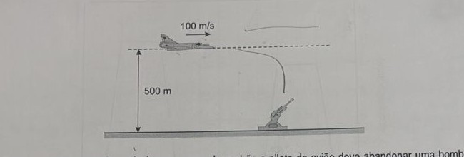
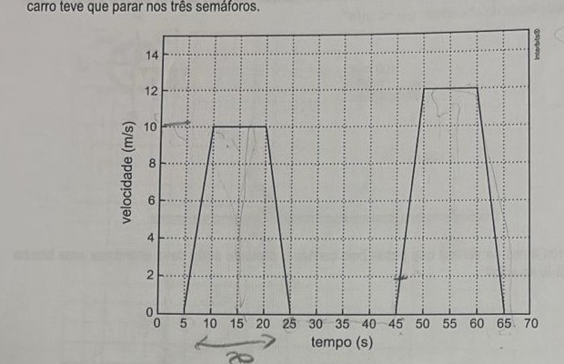

Professor: Jefferson
Nos cruzamentos de avenidas das grandes cidades é comum encontrarmos, além dos semáforos tradicionais de controle de tráfego de carros, semáforos de fluxo de pedestres, com cronômetros digitais que marcam o tempo para a travessia na faixa de pedestres.
a) No instante em que o semáforo de pedestres se torna verde e o cronômetro inicia a contagem regressiva, uma pessoa encontra-se a uma distância d = 20 m do ponto de início da faixa de pedestres, caminhando a uma velocidade inicial v₀ = 0,5 m/s. Sabendo que ela inicia a travessia da avenida com velocidade v = 1,5 m/s, calcule a sua aceleração constante no seu deslocamento em linha reta até o início da faixa.
b) Considere agora uma pessoa que atravessa a avenida na faixa de pedestres, partindo de um lado da avenida com velocidade inicial v₀ = 0,4 m/s e chegando ao outro lado com velocidade final v = 1,2 m/s. O pedestre realiza todo o percurso com aceleração constante em um intervalo de tempo de t = 15 s. Calcule a largura da avenida com esta nova aceleração.
Um projétil é lançado obliquamente no vácuo com velocidade inicial v⃗, a partir do solo. A respeito desse movimento, complete com Verdadeiro (V) ou falso (F).
a) ( ) No ponto mais alto da trajetória, a velocidade vetorial do móvel é diferente de zero.
b) ( ) A fim de que o projétil tenha o maior alcance possível, o ângulo de tiro deve ser igual a 45°.
c) ( ) O valor da aceleração resultante do projétil no ponto culminante é igual a zero.
d) ( ) Se o movimento do projétil ocorrer na Lua onde a aceleração da gravidade é menor, o tempo de voo será maior do que se ele acontecesse na Terra.
Uma ambulância, para chegar a determinada região, considerando o fluxo do trânsito, deve percorrer 2 km ao norte, 3 km ao leste, 3 km ao norte, 1 km ao oeste, 2 km ao norte e mais 4 km ao leste, até chegar ao local de atendimento. Calcule o deslocamento vetorial da ambulância.
Um avião bombardeiro sobrevoa uma superfície plana e horizontal, mantendo constantes uma altitude de 500 m e uma velocidade de 100 m/s. Fixo no solo, um canhão antiaéreo será disparado com a intenção de acertar o avião. Considere que o avião e o canhão estejam contidos em um mesmo plano vertical, despreze a resistência do ar e adote g = 10 m/s².

Quantos metros antes da vertical que passa pelo canhão o piloto do avião deve abandonar uma bomba para acertá-lo no solo?
O semáforo é um dos recursos utilizados para organizar o tráfego de veículos e de pedestres nas grandes cidades. Considere que um carro trafega em um trecho de uma via retilínea, em que temos 3 semáforos. O gráfico abaixo mostra a velocidade do carro, em função do tempo, ao passar por esse trecho em que o carro teve que parar nos três semáforos.

Determine o deslocamento entre o primeiro e o terceiro semáforo.